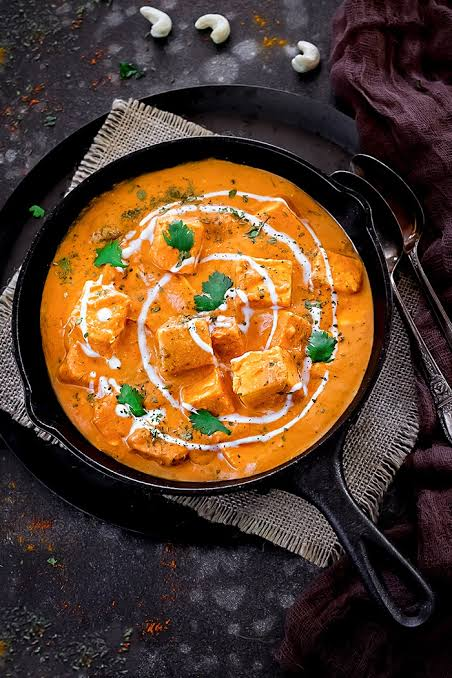

Paneer Butter Masala

Paneer Butter Masala is a delicious and creamy Indian dish made with paneer (cottage cheese) in a rich, flavorful tomato-based sauce with butter and spices.
This recipe will guide you through the steps to make this popular dish at home, perfect for serving with naan or rice.
Ingredients:
- 200g paneer, cubed
- 2 tbsp butter
- 1 large onion, finely chopped
- 2 tomatoes, pureed
- 1 tsp ginger-garlic paste
- 1 tsp red chili powder
- 1 tsp garam masala
- Salt to taste
- Fresh coriander leaves for garnish
Steps:
- Heat butter in a pan over medium heat. Add chopped onions and sauté until golden brown.
- Add ginger-garlic paste and sauté for another minute.
- Add tomato puree, red chili powder, and salt. Cook until the oil separates from the masala.
- Add garam masala and mix well.
- Add the paneer cubes and gently mix to coat them with the masala. Cook for 5-7 minutes.
- Garnish with fresh coriander leaves and serve hot with naan or rice.
Back to Home